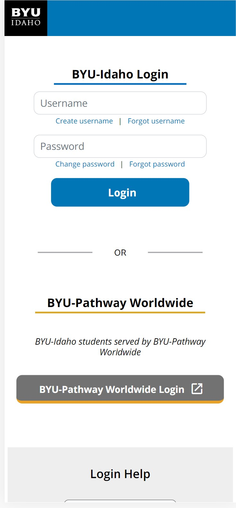

Visual Hierarchy
Saving the BeesThis website is like a new article, it uses visual heirarchy to show importance of what to read.

White Space & Clean Design
BYUI UniversityThis design is a great example of guiding the users eyes. At first you see on the top right BYUI logo which tells the user who. Then you have the Login action button that promts the user to login, create username, or reset password.
PARC: Contrast
Boise State UniversityChoosing the colors are important when designing a website, as it makes it easier to view from the user. This website uses orange as its background color, and white as its font color. If they were to use a darker complexcity for the font color it would be difficult to read.